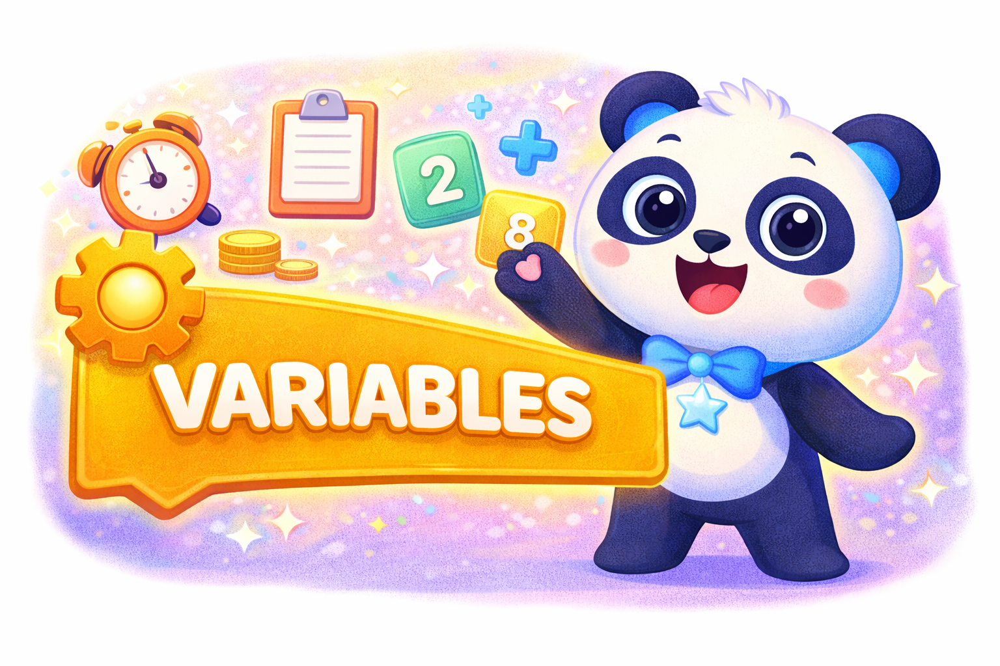

<h2 data-start="224" data-end="290">Operadores y variables.</h2>
Introducción
La programación informática es una herramienta fundamental para el desarrollo del pensamiento lógico, la resolución de problemas y la construcción de soluciones inteligentes mediante el uso del código. En este proceso, las variables y los operadores constituyen elementos básicos que permiten a los programas almacenar información, procesarla y tomar decisiones de manera automatizada. Comprender estos conceptos es esencial para iniciar el aprendizaje de la programación y sentar las bases del razonamiento computacional (Wing, 2006).
🔢 Variables: almacenando información
Las variables son espacios de memoria que permiten guardar datos que pueden cambiar durante la ejecución de un programa. Cada variable posee un nombre y un valor, lo que facilita la manipulación de información como números, textos o resultados de operaciones. Según Downey (2015), las variables funcionan como etiquetas que hacen referencia a valores almacenados en la memoria del computador, permitiendo que los programas sean flexibles y dinámicos.
El uso adecuado de variables favorece la organización del código y la comprensión de los procesos que realiza un programa, ya que permiten representar datos del mundo real dentro de un entorno digital.
Ejemplo:
Una variable puede almacenar la edad de una persona, el puntaje de un juego o el resultado de una operación matemática.
➕ Operadores: realizando acciones
Los operadores son símbolos que indican al computador qué operación debe realizar sobre uno o más valores o variables. Estos permiten ejecutar cálculos, comparar datos y combinar condiciones lógicas. De acuerdo con Joyanes Aguilar (2014), los operadores son esenciales para transformar datos y construir expresiones que dan sentido a los algoritmos.
Entre los operadores más utilizados se encuentran:
- Operadores aritméticos, que permiten realizar operaciones matemáticas como suma, resta,
- multiplicación y división.
- Operadores de comparación, que permiten comparar valores y establecer relaciones como mayor que, menor que o igual.
- Operadores lógicos, que se emplean para combinar condiciones y tomar decisiones dentro de un programa.
Operadores y variables en la construcción de la inteligencia computacional

La combinación de variables y operadores permite a los programas analizar información, resolver problemas y generar respuestas, lo que constituye la base de la llamada inteligencia computacional. Según Grover y Pea (2013), el aprendizaje de estos conceptos contribuye al desarrollo del pensamiento computacional, ya que promueve habilidades como la abstracción, la lógica y el análisis de datos.
Recuerda :
"Al aprender a utilizar variables y operadores, los estudiantes comienzan a comprender cómo el computador “piensa” y cómo el código puede transformarse en una herramienta para crear soluciones inteligentes en distintos contextos"